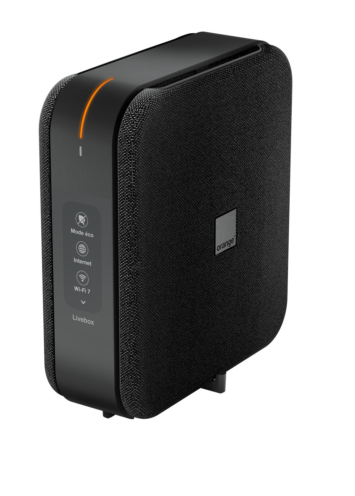
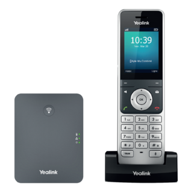
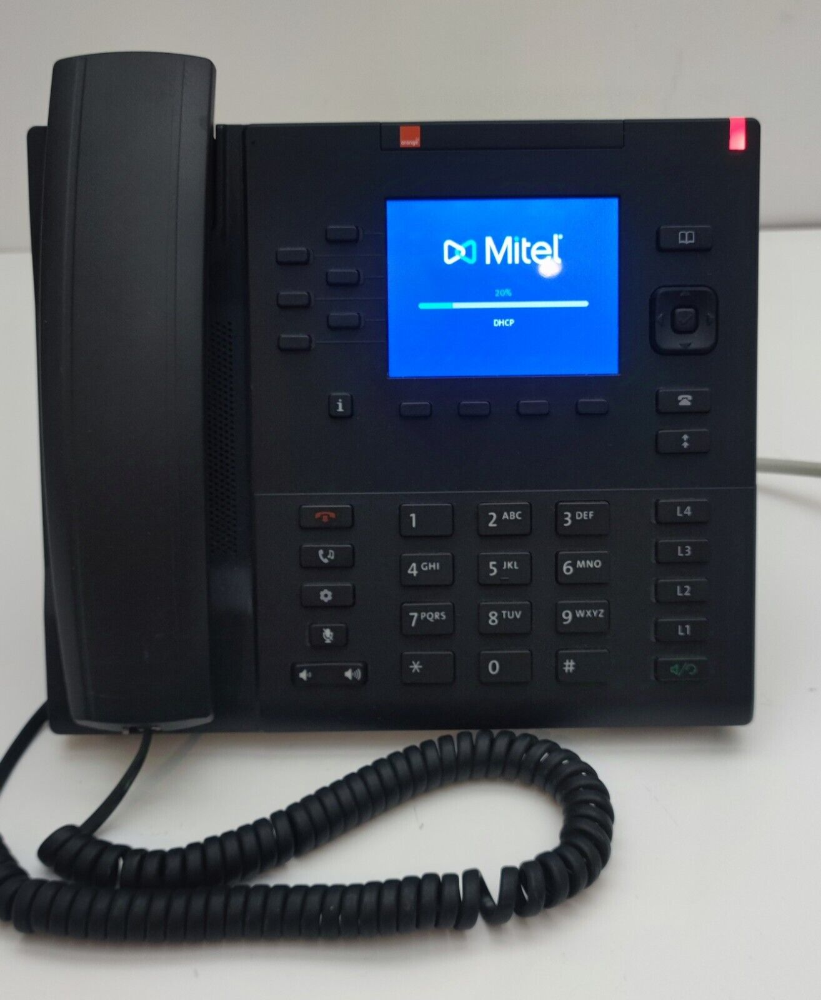
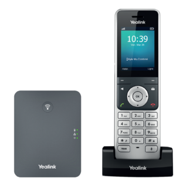
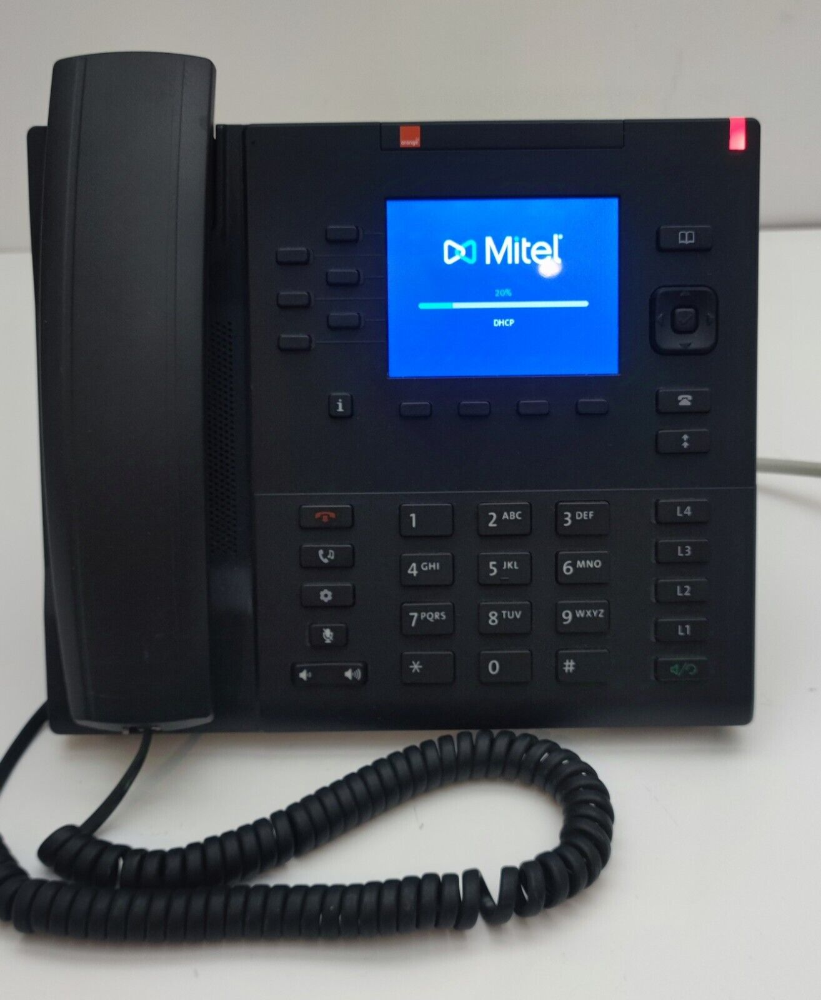
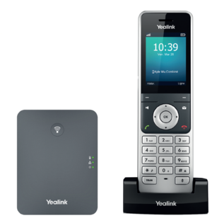
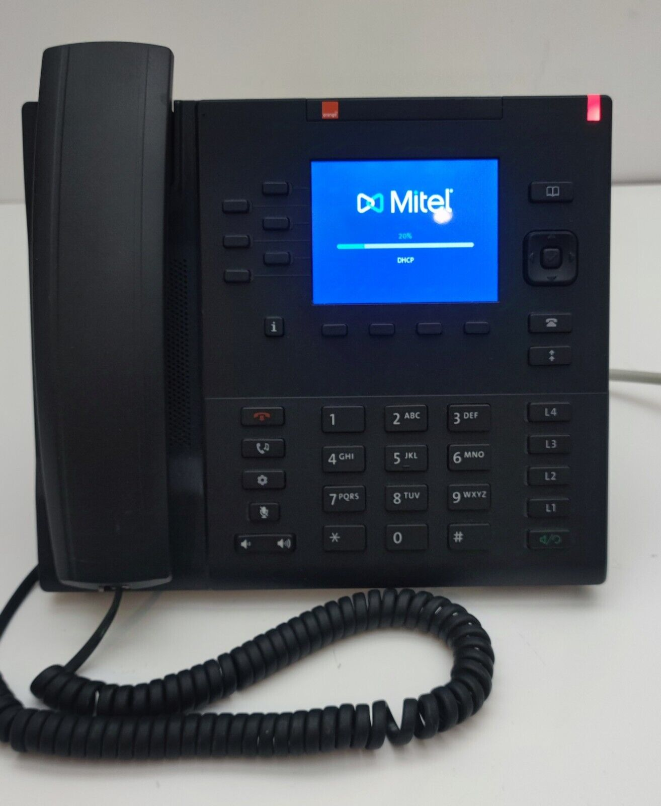

Installation d'Offres Connect Pro
1. Phase de Diagnostic et Préparation (Audit)
Avant toute intervention, je réalise un audit complet pour garantir une migration sans perte de service :
- Vérification SVI : Test de l'accueil et des messages via la plateforme ATS Studio.
- Sauvegarde : Récupération de la configuration de l'ancienne box pour assurer la continuité des paramètres réseau.
- Accord client : Information et obtention de l'accord formel avant toute coupure.
2. Déploiement Matériel, Migration et Téléphonie IP
Cette phase regroupe l'installation de l'infrastructure internet et la mise en service des solutions de communication :
- Installation physique : Mise sous tension de la nouvelle box et activation de l'Airbox de secours (4G/5G).
- Configuration Téléphonique : Paramétrage de la ligne via l'interface Web, installation du poste fixe et appairage DECT.
- Activation MOBI : Finalisation technique et administrative via l'application métier.

 





3. Gestion des Incidents (Retours d'expérience)
Durant mes interventions, je gère les anomalies complexes en lien avec les supports experts :
- Forçage de profil : Correction des box non configurées en "Mode Pro" via le service Connect Pro.
- Erreur d'adressage MAC : Résolution des échecs d'appairage ToIP causés par une inversion des adresses MAC.
Analyse Réflexive
Cette mission m'a permis de développer une plus grande autonomie dans la gestion de projets clients. J'ai appris à identifier les dysfonctionnements critiques et à adapter ma communication pour rassurer le client.
Traces et Preuves
Preuves : Capture d'écran de validation MOBI, Photos de l'installation DECT, Fiches d'intervention résolues.